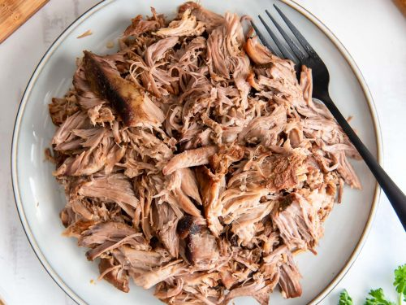

Pulled Pork

Description
This recipe is for crock pot pulled pork. Requires few
ingrediants and will take approximately 6-8 hours to prepare.
Ingrediants
- 2 tbsp brown sugar
- 1 tsp garlic powder
- 1 tsp ground mustard
- 3 tsp pepper
- 1 tbsp salt
- 3 tbsp smoked paprika
- 1 cup chicken stock
- 3 1/2 lbs boneless pork shoulder
Steps
-
Using a sharp knife, remove the excess fat from
the outside of the pork shoulder. Be careful not to
remove all the fat from the meat.
-
Add the brown sugar, garlic powder, gound
mustard, salt, pepper, and smoked
paprika to a mixing bowl. Stir until homogenous.
-
Apply the dry rub to the meat, making sure to cover
every crevise with the mixture.
-
Add chicken stock and meat to the slow cooker.
Cook on high for 4-6 hours or low for 8 hours.